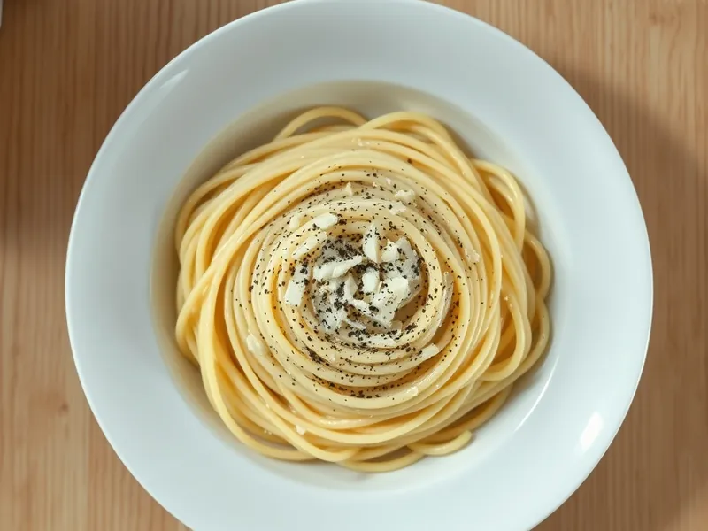

Фото: Иллюстрация ИИ, Cloudflare Workers AI
Паста качо э пепе с сыром и перцем
Римская паста с тёртым сыром и свежемолотым чёрным перцем в соусе из воды от пасты
15 мин2 порц.498 ккал на порциюБ 25 · Ж 12 · У 70Итальянская кухня
Продукты на 2 порц.
- Макароны200 г
- Пармезан80 г
- Перец чёрный молотый1 ч. л.
- Сливочное масло по желаниюпо вкусу
- Соль1 ч. л.
- Вода1500 мл
Как готовить
- Вскипятите воду на сильном огне, посолите вдвое слабее обычного и сварите спагетти на 1 минуту меньше, чем указано на упаковке.
- Сыр натрите на самой мелкой тёрке. Перец прогрейте на сухой сковороде на среднем огне 1 минуту до аромата.
- Отлейте 150 мл воды от пасты. В миске смешайте сыр с 3-4 ложками этой воды до густой пасты без комков.
- Откиньте спагетти, переложите в сковороду с перцем, влейте 50 мл воды и снимите с огня, подождите 30 секунд.
- Добавьте сырную пасту и быстро перемешивайте щипцами 1-2 минуты, подливая воду, пока не получится гладкий кремовый соус. Подавайте сразу.
Совет. Если сыр сворачивается нитками, сковорода слишком горячая. Варите пасту в небольшом количестве воды, тогда она крахмалистее и соус лучше держится.